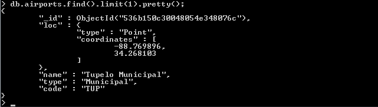

Lab 3a - MongoDB GeoData - Airports
Explore databases
> show dbs
> use geodb
> show collections
> use geodb
> show collections
geodb collections
Explore Airports in California
var cal = db.states.findOne({ code: "CA" });
cal
db.airports.find(
{
loc: {$geoWithin: {$geometry: cal.loc }}
},
{ name: 1, type: 1, code: 1, _id: 0 }
);
output
All Airports in California
var ca_airports = db.airports.find(
{
loc: {$geoWithin: {$geometry: cal.loc }}
},
{ name: 1, type: 1, code: 1, _id: 0 }
);
ca_airports.limit(10);
ca_airports.count();

International Airports in California
var intl_airports = db.airports.find(
{
loc: {$geoWithin: {$geometry: cal.loc }},
type: "International"
},
{ name: 1, type: 1, code: 1, _id: 0 }
).sort({ name: 1 });
intl_airports.limit(10);
intl_airports.count();
Examples using Explain
db.airports.find(
{
loc : { $geoWithin : { $geometry : cal.loc } },
type : "Interna1onal"
},
{ name : 1 , type : 1, code : 1, _id: 0 }
).sort({ name : 1 }).explain();
db.airports.ensureIndex( { "loc" : "2dsphere" } );
db.airports.find(
{
loc : { $geoWithin : { $geometry : cal.loc } },
type : "Interna1onal"
},
{ name : 1 , type : 1, code : 1, _id: 0 }
).sort({ name : 1 }).explain();
geoIntersects ne "CA"
var cal = db.states.findOne( {code : "CA"} );
db.states.find(
{
loc : { $geoIntersects : { $geometry : cal.loc } } ,
code : { $ne : "CA" }
},
{ name : 1, code : 1 , _id : 0 }
);
Indexes
db.airports.getIndexes();
db.airports.createIndex({ loc: 1 });
db.airports.getIndexes();
Using pretty()
db.airports.find().limit(1).pretty();
Using $maxDistance and $minDistance
db.airports.find(
{
loc: {
$near : {
$geometry : {
type : "Point",
coordinates : [-73.965355, 40.782865]
},
$maxDistance : 20000
}
},
type : "International"
},
{
name : 1,
code : 1,
_id : 0
}
)
db.airports.find(
{
loc:
{ $near :
{
$geometry : { type : "Point", coordinates : [-73.965355, 40.782865] },
$minDistance : 21000,
$maxDistance : 100000
}
}
},
{ name : 1, type : 1, code : 1, _id : 0 }
)